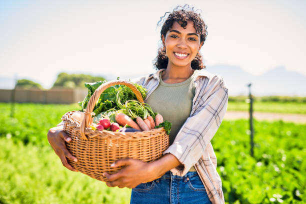

ABOUT US
At Green Haven Organic, we believe in bringing farm-fresh, pesticide-free food straight to your doorstep. Our carefully sourced organic products are packed with nutrients and delivered with convenience in mind. From crisp produce to wholesome pantry staples, we're committed to your health and the planet—one delicious, eco-friendly bite at a time.


SINCE 1998G.C

QUALITY OVER QUANTITY